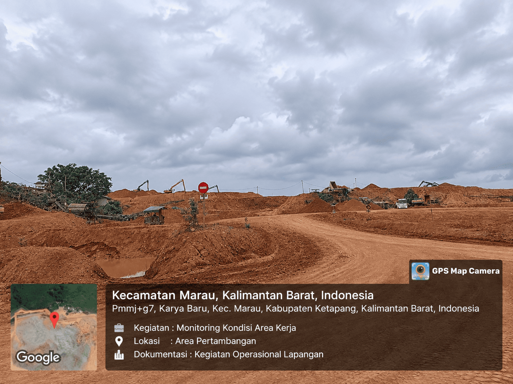

Geospatial Analysis, Topographic Mapping & Spatial Data Visualization

This project focuses on geospatial data processing and mapping activities, including spatial data organization, topographic mapping, and map visualization. The workflow involves transforming spatial datasets into informative maps that support geographic analysis and interpretation.
QGIS – Used for spatial data processing, geographic analysis, layer management, and cartographic mapping.
Global Mapper – Used for terrain data visualization, topographic analysis, and geospatial data management.
Topographic mapping, geospatial data organization, spatial visualization, and geographic information processing.